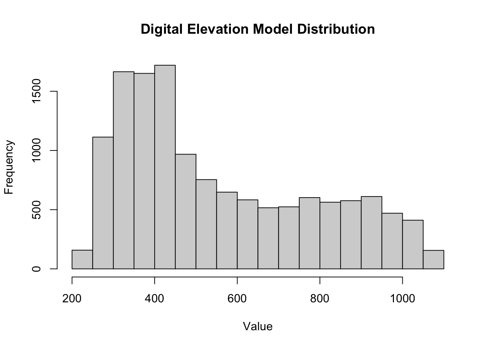
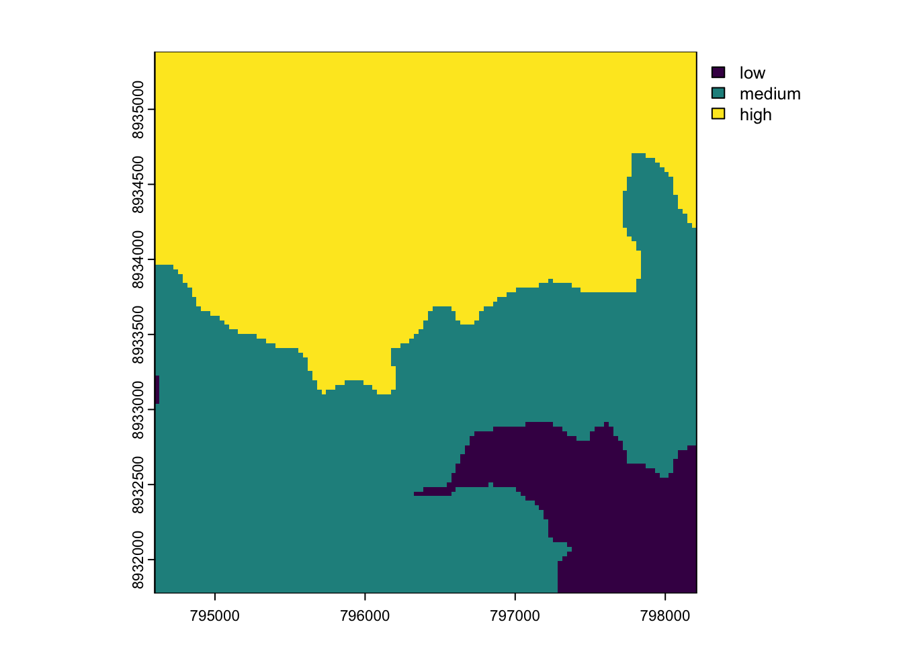
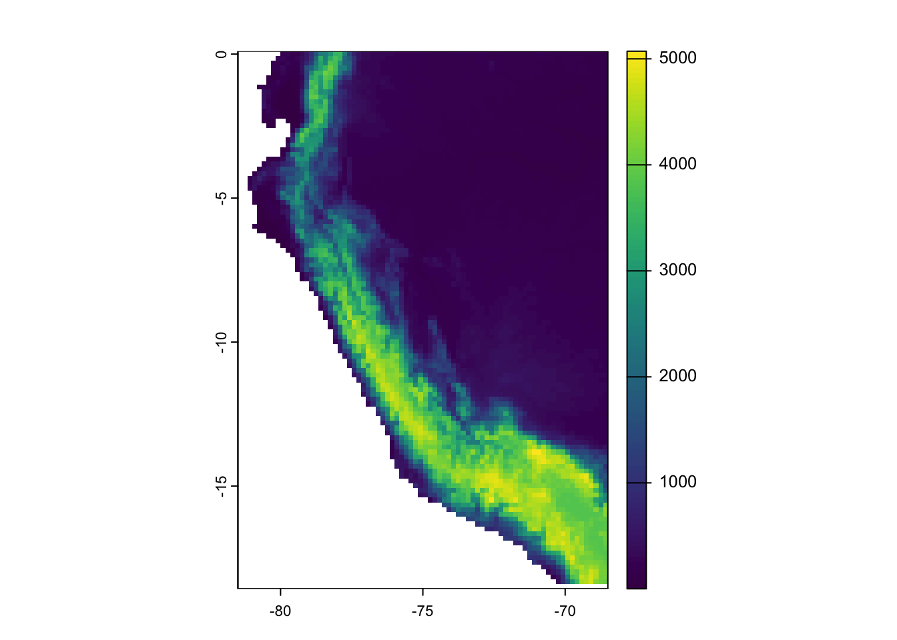
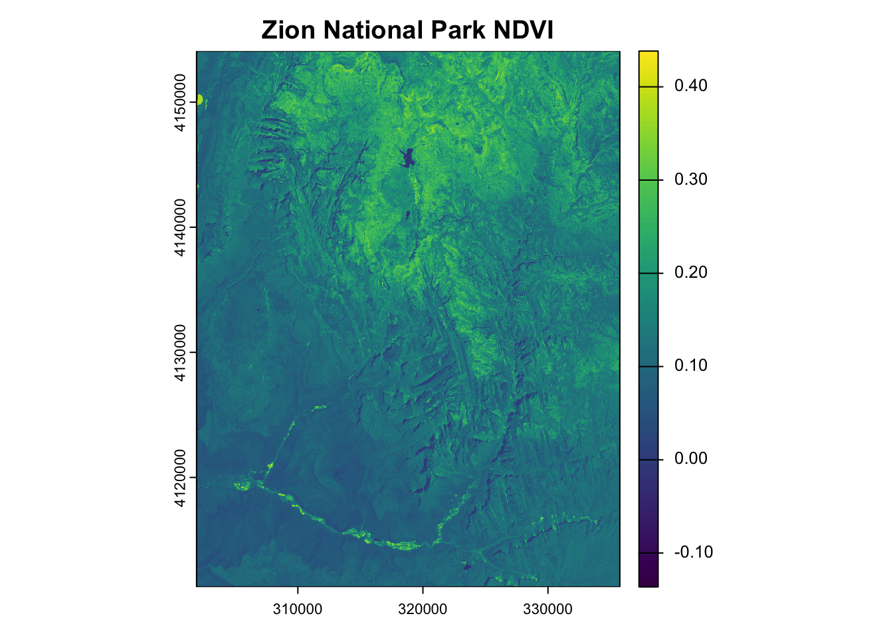
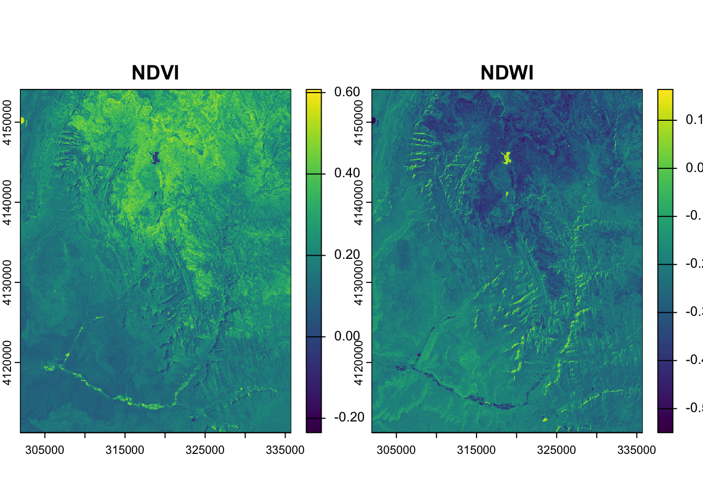
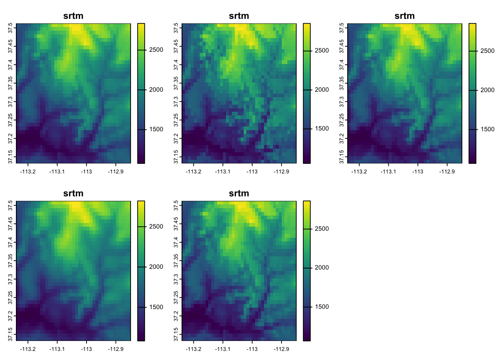

library(tidyverse)
library(spData)
library(spDataLarge)
library(sf)
library(stars)
library(terra)
Source Materials
The following materials are modified from Geocomputation with R by Robin Lovelace.
1. Get Started
- Create a version-controlled R Project
- Create a Quarto document
Let’s load all necessary packages:
You will be working with the following datasets:
- Digital elevation model (DEM) of Mt. Mongón, Perú, obtained from
spDataLarge - Landsat image of Zion National Park, obtained from
spDataLarge - SRTM elevation of Zion National Park, obtained from
spDataLarge
dem <- terra::rast(system.file("raster/dem.tif", package = "spDataLarge"))
landsat <- terra::rast(system.file("raster/landsat.tif", package = "spDataLarge"))
srtm <- terra::rast(system.file("raster/srtm.tif", package = "spDataLarge"))2. Explore elevation at Mt. Mongón, Perú
- Make a boxplot and histogram of elevation at Mt. Mongón, Perú
Solution
hist(dem,
main = "Digital Elevation Model Distribution",
xlab = "Value")
boxplot(dem,
main = "Digital Elevation Model Distribution",
ylab = "Value")
- Reclassify
demand compute the mean for the three classes:- Low, where elevation is less than 300
- Medium
- High, where elevation is greater than 500
Solution
# Define a reclassification matrix
rcl <- matrix(c(-Inf, 300, 0, # values -Inf to 300 = 0
300, 500, 1, # values 300 to 500 = 1
500, Inf, 2), # values 500 to Inf = 2
ncol = 3, byrow = TRUE)
# Apply the matrix to reclassify the raster, making all cells 0 or 1 or 2
dem_rcl <- terra::classify(dem, rcl = rcl)
# Assign labels to the numerical categories
levels(dem_rcl) <- tibble::tibble(id = 0:2,
cats = c("low", "medium", "high"))
# Calculate mean elevation for each category using original DEM values
elevation_mean <- terra::zonal(dem, dem_rcl, fun = "mean")
elevation_mean cats dem
1 low 274.3910
2 medium 392.0486
3 high 765.21973. Explore NDVI and NDWI at Zion National Park
Landsat 8 bands 2-5 correspond to bands 1-4 for this raster. Bands are as follows:
| Band | Color | |
|---|---|---|
| 1 | blue | 30 meter |
| 2 | green | 30 meter |
| 3 | red | 30 meter |
| 4 | near-infrared | 30 meter |
Apply a scale factor and offset for all grid cells
Landsat Level-2 products are written as scaled integers to allow us to convert the data from floating point to integer for delivery. In most cases these are written to a 16-bit integer, which saves disk space and provides faster download times. Each floating point pixel has an offset applied and then multiplied by a gain to bring the value into the 16-bit integer (or unsigned integer) range. These values are referred to as scaled integers. To allow the user to get the data back to its original floating point value, a scale factor and offset are provided for each band.
| Science product | Scale factor | Offset |
|---|---|---|
| Surface reflectance | 0.0000275 | -0.2 |
First, correct the scale across all grid cells and then apply the following functions at each grid cell, in the image:
\[\text{NDWI} = \frac{\text{(green - NIR)}}{\text{(green + NIR)}}\] \[\text{NDVI} = \frac{\text{(NIR - red)}}{\text{(NIR + red)}}\]
- Calculate the Normalized Difference Vegetation Index (NDVI) at Zion National Park
- Calculate the Normalized Difference Water Index (NDWI) at Zion National Park
- Find a correlation between NDVI and NDWI at Zion National Park
- Hint: Explore the
terrapackage to find a function that can help achieve this!
- Hint: Explore the
Solution
scale_factor <- 0.0000275
offset <- 0.2
scale_function <- function(x) {
x * scale_factor + offset
}
landsat_scaled <- terra::app(landsat, fun = scale_function)
Solution
ndwi_fun <- function(green, nir){
(green - nir)/(green + nir)
}
ndvi_fun <- function(nir, red){
(nir - red)/(nir + red)
}
Solution
ndwi_rast <- terra::lapp(landsat_scaled[[c(2, 4)]],
fun = ndwi_fun)
ndvi_rast <- terra::lapp(landsat_scaled[[c(4, 3)]],
fun = ndvi_fun)plot(ndwi_rast,
main = "Zion National Park NDWI")
plot(ndvi_rast,
main = "Zion National Park NDVI")
combine <- c(ndvi_rast, ndwi_rast) # Stack rasters
plot(combine, main = c("NDVI", "NDWI")) # Plot
# Calculate correlation between raster layers
terra::layerCor(combine, fun = cor) [,1] [,2]
[1,] 1.0000000 -0.9062336
[2,] -0.9062336 1.00000004. Change resolution of elevation at Zion National Park
- Use all the methods available to change the resolution of elevation at Zion National Park to 0.01 by 0.01 degrees
- Note: The
srtmraster has a resolution of 0.00083 by 0.00083 degrees
- Note: The
Solution
plot(srtm)
rast_template <- terra::rast(terra::ext(srtm), res = 0.01) # Create empty templatesrtm_resampl1 <- terra::resample(srtm, y = rast_template, method = "bilinear")
srtm_resampl2 <- terra::resample(srtm, y = rast_template, method = "near")
srtm_resampl3 <- terra::resample(srtm, y = rast_template, method = "cubic")
srtm_resampl4 <- terra::resample(srtm, y = rast_template, method = "cubicspline")
srtm_resampl5 <- terra::resample(srtm, y = rast_template, method = "lanczos")srtm_resampl_all <- c(srtm_resampl1, srtm_resampl2, srtm_resampl3, srtm_resampl4, srtm_resampl5)
labs <- c("Bilinear", "Near", "Cubic", "Cubic Spline", "Lanczos")
plot(srtm_resampl_all, main = labs)